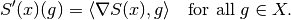

Functional¶
A functional is an operator that maps that maps from some vector space  to the field of scalars
to the field of scalars  .
.
In the ODL Solvers package, functionals are implemented in the Functional class, a subclass to Operator.
From a mathematical perspective, the above is a valid definition of a functional. However, since these functionals are primarily to be used for solving optimization problems, the following assumptions are made:
- the vector space
- the field of scalars
The first assumption is made in order to simplify the concept of convex conjugate functional, see convex_conj under Implementation of functionals for more details, or the Wikipedia articles on convex conjugate and Legendre transformation.
The second assumption is made in order to guarantee that we use a well-ordered set (in contrast to e.g. the complex numbers) over which optimization problems can be meaningfully defined, and that optimal solutions are in fact obtained. See, for example, the Wikipedia articles on field, ordered field and least-upper-bound property.
Note that these conditions are not explicitly checked. However, using the class in violation to the above assumptions might lead to unknown behavior since some of the mathematical results might not hold. Also note that most of the theory, and most solvers, requires the functional to be convex. However this property is not stored or checked anywhere in the class. It is therefore the users responsibility to ensure that a functional has the properties required for a given optimization method.
The intended use of the Functional class is, as mentioned above, to be used when formulating and solving optimization problems.
One main difference with the Operator class is thus that it contains notions specially intended for optimization, such as convex conjugate functional and proximal operator.
For more information on these concepts, see convex_conj and proximal under Implementation of functionals.
There is also a certain type of arithmetics associated with functionals, for more on this see Functional arithmetic.
Implementation of functionals¶
To define your own functional, start by writing:
class MyFunctional(odl.solvers.Functional):
"""Docstring goes here."""
def __init__(self, space):
# Sets `Operator.domain` to `space` and `Operator.range` to `space.field`
super(MyFunctional, self).__init__(space)
...
Functional needs to be provided with a space, i.e., the domain on which it is defined, from which it infers the range.
space:LinearSpace- The domain of this functional, i.e., the set of elements to which this functional can be applied.
Moreover, there are two optional parameters that can be provided in the initializer.
These are linear, which indicates whether the functional is linear or not, and grad_lipschitz, which is the Lipschitz constant of the gradient.
linear: bool, optional- If
True, the functional is considered as linear.
grad_lipschitz: float, optional- The Lipschitz constant of the gradient.
A functional also has three optional properties and one optional method associated with it. The properties are:
functional.gradient. This returns the gradient operator of the functional, i.e., the operator that corresponds to the mappingwhere
is the the space element representing the Frechet derivative (directional derivative) at the point

See also
Functional.derivative.
functional.convex_conj. This is the convex conjugate of the functional, itself again a functional, which is also known as the Legendre transform or Fenchel conjugate. It is defined aswhere
is an element in
, the (continuous/normed) dual space of
proximal. This returns aproximal factoryfor the proximal operator of the functional. The proximal operator is defined as

The default behavior of these is to raise a NotImplemetedError.
The Functional class also contains default implementations of two helper functions:
derivative(point). Given an implementation of the gradient, this method returns the (directional) derivative operator inpoint. This is the linear operator
where is the gradient of the functional in the point
.
translated(shift). Given a functionaland a shift
, this method creates the functional .

Functional arithmetic¶
It is common in applications to perform arithmetic operations with functionals, for example adding two functionals and  :
:
or multiplication of a functional by a scalar:
Another example is translating a functional with a vector :
or given an Operator  whose range is the same as the domain of the functional we also have composition:
whose range is the same as the domain of the functional we also have composition:
In some of these cases, properties and methods such as gradient, convex_conjugate and proximal can be calculated automatically given a default implementation of the corresponding property in and .
All available functional arithmetic, including which properties and methods that automatically can be calculated, is shown below.
S, T represent Functional’s with common domain and range, and A an Operator whose range is the same as the domain of the functional.
a is a scalar in the field of the domain of S and T, and y is a vector in the domain of S and T.
| Code | Meaning | Class |
|---|---|---|
(S + T)(x) |
S(x) + T(x) |
FunctionalSum
- Retains Functional.gradient. |
(S + a)(x) |
S(x) + a |
FunctionalScalarSum
- Retains all properties.
Note that this never means scaling of the argument. |
(S * A)(x) |
S(A(x)) |
FunctionalComp
- Retains Functional.gradient. |
(a * S)(x) |
a * S(x) |
FunctionalLeftScalarMult
- Retains all properties if a is positive.
Otherwise only Functional.gradient and Functional.derivative are retained. |
(S * a)(x) |
S(a * x) |
FunctionalRightScalarMult
- Retains all properties. |
(v * S)(x) |
v * S(x) |
FunctionalLeftVectorMult
- Results in an operator rather than a functional. |
(S * v)(x) |
S(v * x) |
FunctionalRightVectorMult
- Retains gradient and convex conjugate. |
f.translated(y) |
f(. - y) |
FunctionalTranslation
- Retains all properties. |
Code example¶
This section contains an example of an implementation of a functional, namely the functional . Another example can be found in functional_basic_example.py, and more implementations of other functionals can be found in default_functionals.py.
"""Example of how to implement and use functionals."""
from __future__ import division, print_function
import odl
# Here we define the functional
class MyFunctional(odl.solvers.Functional):
"""This is my functional: ``||x||_2^2 + <x, y>``."""
def __init__(self, space, y):
"""Initialize a new instance."""
# This comand calls the init of Functional and sets a number of
# parameters associated with a functional. All but domain have default
# values if not set.
super(MyFunctional, self).__init__(
space=space, linear=False, grad_lipschitz=2)
# We need to check that linear_term is in the domain. Then we store the
# value of linear_term for future use.
if y not in space:
raise TypeError('linear_term is not in the domain!')
self.y = y
# Defining the _call function. This method is used for evaluation of
# the functional and always needs to be implemented.
def _call(self, x):
"""Evaluate the functional."""
return x.norm() ** 2 + x.inner(self.y)
# Next we define the gradient. Note that this is a property.
@property
def gradient(self):
"""The gradient operator."""
# First we store the functional in a variable
functional = self
# The class corresponding to the gradient operator.
class MyGradientOperator(odl.Operator):
"""Class implementing the gradient operator."""
def __init__(self):
"""Initialize a new instance."""
super(MyGradientOperator, self).__init__(
domain=functional.domain, range=functional.domain)
def _call(self, x):
"""Evaluate the gradient."""
# Here we can access the store functional from a few lines
# above
return 2.0 * x + functional.y
return MyGradientOperator()
# Next we define the convex conjugate functional.
@property
def convex_conj(self):
"""The convex conjugate functional."""
# This functional is implemented below.
return MyFunctionalConjugate(space=self.domain, y=self.y)
# Here is the conjugate functional. Note that this is a separate class, in
# contrast to the gradient which was implemented as an inner class. One
# advantage with the inner class it that we don't have to pass as many
# parameters when initializing, on the other hand having separate classes
# normally improves readibility of the code. Both methods are use throughout
# the odl package.
class MyFunctionalConjugate(odl.solvers.Functional):
"""Conjugate functional to ``||x||_2^2 + <x,y>``.
This funtional has the analytic expression
``f^*(x) = ||x-y||^2/4``.
"""
def __init__(self, space, y):
"""initialize a new instance."""
super(MyFunctionalConjugate, self).__init__(
space=space, linear=False, grad_lipschitz=2)
if y not in space:
raise TypeError('y is not in the domain!')
self.y = y
def _call(self, x):
"""Evaluate the functional."""
return (x - self.y).norm()**2 / 4.0
# Create a functional
space = odl.uniform_discr(0, 1, 3)
linear_term = space.element([1, -4, 7])
my_func = MyFunctional(space=space, y=linear_term)
# Now we evaluate the functional in a random point
point = odl.util.testutils.noise_element(space)
print('Value of the functional in a random point: {}'
''.format(my_func(point)))
# Now we use the steepest-decent solver and backtracking linesearch in order to
# find the minimum of the functional.
# Create a starting guess. Also used by the solver to update in-place.
x = space.one()
# Create the linesearch object
line_search = odl.solvers.BacktrackingLineSearch(my_func, max_num_iter=10)
# Call the solver
odl.solvers.steepest_descent(my_func, x, maxiter=10, line_search=line_search)
print('Expected value: {}'.format((-1.0 / 2) * linear_term))
print('Found value: {}'.format(x))
# Create the convex conjugate functional of a scaled and translated functional
scalar = 3.2
translation = space.one()
scal_trans_cc_func = (scalar * my_func).translated(translation).convex_conj
# Evaluating the new functional in the random point.
print('Value of the new functional in a random point: {}'
''.format(scal_trans_cc_func(point)))